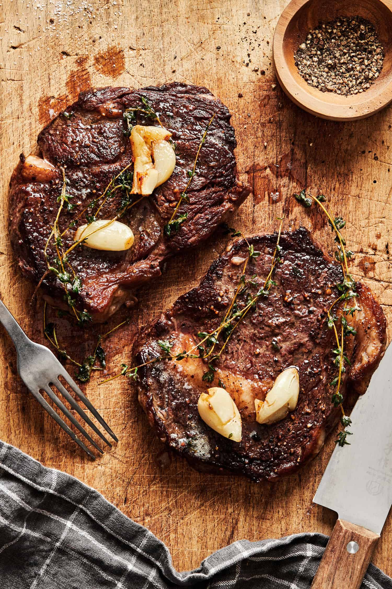

New York Strip Steak

Pan Seared Oven Roasted Strip Steak
Cook like the best steakhouses. Searing steak in a cast-iron skillet will give you the wonderful flavor of the Millard reaction. Then, finish the steak in the oven to your desired temperature.
Learn the sear and bake technique with easy step-by-step photo instructions—a foolproof recipe for moist and tender steak every time. For equally great results on the grill, check out How to Grill Strip Steak on a Gas Grill.
Ingredients
- New york Strip Steaks - about 1 inch thick, choice or prime grade
- Seasoning - salt, black pepper, garlic powder
- Optional Seasoning - marinades, thyme, rosemary or other herbs and spices
How To Cook a New York Strip Steak - Step-by-step
- Allow the steaks to rest at room temperature for 30-60 minutes if you have time—preheat the oven to 400° convection or 425° conventional oven.
- Trim any easily trimmable edge fat. Pat dry with paper towels.
- Season to your taste. A good sprinkle of black pepper and Kosher salt is all you need, but I use 7:2:2 (my homemade seasoning).
- Melt 1 tablespoon of butter or use oil in an oven-safe pan (cast-iron preferred) over medium-high heat. Some prefer oil due to butter's lower smoke point, but I have never had a problem with either.
- When the pan is hot, add the strip steaks.
- Sear both sides of the steaks for about 2 minutes each. Sear close to the final color you want.
- Transfer the pan to the preheated oven. Now comes the variables: the steak thickness, how long you seared it, and the oven's actual temperature. Cook to the final temperature minus a few degrees—the steaks will rise a few degrees during the rest after cooking.
- Bake for about 5 to 7 minutes to reach 130-135° (medium-rare) or 7 to 9 minutes for 140°-145° (medium). Remove from the oven, tent with foil, and allow to rest for a few minutes before serving. COOK TO THE TEMPERATURE, NOT BY TIME ALONE.